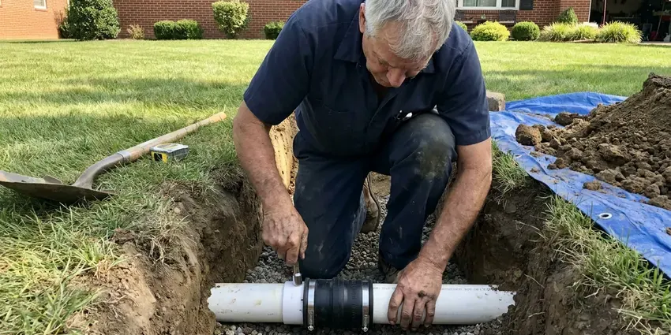

Storm Drain Cleaning in Leominster, MA
Dirt, gravel and leaves pack storm drains all year in Leominster, MA. Our crew flushes them out so runoff moves away from your foundation.
- Catch Basins and Dry Wells
- Trained Drain Techs
- Written Warranty
- Camera Line Locating

Get Your Yard Drains Flowing in Leominster, MA
Book a cleaning now and we will flush every inlet, pipe and outlet on your property.
Storm Drain Cleaning in Leominster, MA Done Right
BWM Plumbing uses water jetting, vacuum extraction and a camera to clear silt, sand, gravel and leaf litter from storm piping. The camera shows the problem spot. Then we clear that section and run water through the system to confirm it reaches the outlet or retention area the way it was built to.
Our expertise includes:
- Hydro jetting for packed silt and gravel
- Jetting corrugated and PVC storm pipe without crushing it
- Grate and inlet box cleaning

Additional Drain Services Services in Leominster, MA
From stubborn kitchen clogs to main sewer backups, our drain services in Leominster, MA restore full flow fast and keep it that way.




Sewer Line Replacement near Leominster


Customers
Why Choose BWM Plumbing for Storm Drain Cleaning in Leominster, MA?
Clogged storm drains damage more than the yard. Slabs and walls suffer. Water that pools against the house can erode soil under the slab, crack driveways and walkways, and seep into garages and crawl spaces, which costs far more to fix than a yearly cleaning.
- Debris Removal, Silt and gravel are vacuumed out instead of flushed farther down your line.
- Pre-Season Service, We schedule cleanings ahead of storm season so your drains are ready for the first heavy storm.
- Repeat-Problem Fixes, We look for grading or pipe issues that lead to repeat flooding.
Citywide Coverage
Every corner of Leominster gets the same careful storm drain service. Plan before the rain. Booking before the busy season means your drains are clean when the first big storm arrives.
Experienced Team
Every technician at BWM Plumbing completes training on storm drain cleaning. It covers safe operation. That training focuses on clearing storm lines effectively and safely, so the crew can diagnose and resolve even complex blockages on local properties.
Safety-First Approach
Every storm drain job follows local plumbing codes. Safety rules too. Our crew works within local plumbing codes and safety regulations, so the work is done without risk to your property or the team.
Trusted Certified Leominster Plumbing Services Professionals
At BWM Plumbing, we take pride in licensed, certified plumbing services throughout Leominster, MA. Credentials matter in this trade. Every repair, install and maintenance visit follows strict safety and quality rules, and the plumbers doing the work carry recognized industry credentials.
Call Us Now PHCC Plumbing Contractor Recognition
PHCC Plumbing Contractor Recognition Better Business Bureau (BBB) Accreditation
Better Business Bureau (BBB) Accreditation Angi Certified Pro
Angi Certified Pro ISO 9001 Quality Management Certification
ISO 9001 Quality Management CertificationStorm Drain Cleaning Work in Leominster, MA
Storm Drain Cleaning Cost Versus Water Damage in Leominster, MA
Cleaning costs far less than drying out a garage. Most people call too late. A yearly cleaning, ideally before the rainy season, prevents nearly all storm drain problems, and if a pipe is crushed we can find it with a camera and repair just that section, with clear pricing for both.

Storm Drain Camera Inspection in Leominster
Recurring clogs need a closer look. Video answers the question. We inspect the pipe on video to find out why it keeps clogging and pick the right fix.
Catch Basin Cleaning in Leominster
Sumps and catch basins trap sediment. They need regular emptying. We vacuum each basin, clear the trash and inspect the outlet, which keeps sediment out of the pipe, and we schedule HOAs and commercial lots before and after the rainy season.
Commercial Storm Drain Maintenance in Leominster, MA
Flooded parking lots cost businesses money. Liability comes with it. Commercial systems often have larger pipe, multiple basins and long runs, and our equipment is sized to clean them fully while keeping the property in line with local storm water rules.
Root Removal from Storm Drains in Leominster
Roots find storm pipe too. Older joints let them in. Tree roots work into cracks and loose joints in older storm lines, and we cut them out with root-cutting heads on drain cables or jetting nozzles, then recommend steps to keep them out.
Storm Drain Repair vs. Cleaning Costs in Leominster, MA
Cleaning usually runs $200 to $600. Broken pipe is a bigger job. A camera inspection shows whether cleaning is enough or a section needs to be replaced, which can cost several thousand.
Flooded Yard Drain Fixes in Leominster
Flooded yards often start at one inlet. Leaves cover the grate. We clear the grate, vacuum the inlet box and use drain cables and jetting to open the pipe, so the system is ready to carry the next heavy rain away from the house.

Urgent Storm Drain Clearing in Leominster
A sudden downpour can expose a bad clog. Flooding follows fast. We clear the drain causing the flooding first, then come back to clean the rest once the storm passes.
Local Storm Drain Cleaning Near Me in Leominster, MA
A local storm drain company knows the local layout. Swales, basins and curb outlets. Knowing how lots in town are graded and where builders usually put inlets and outlets helps us find buried lines faster and clean them right the first time.
Heavy rain makes local service matter. Fast scheduling counts. We serve the whole area with crews who can get to a flooding drain quickly and clear it before the water reaches the foundation or the garage.
BWM Plumbing at a Glance
- Licensed and insured plumbers serving Leominster, MA
- Same-day appointments and 24/7 emergency response
- Upfront, flat-rate pricing before work begins
- 4.9-star rated by 434+ Massachusetts customers
Leominster Map
Leominster Information
- Population
- 43,627
- Area codes
- 978/351/774
- Service area
- Leominster and towns within a 40 mile drive
- Nearby
- Worcester, Framingham, Lowell, Waltham
Dry spells let dust and gravel settle in yard drains, and a sudden downpour then meets a clogged pipe, which is hard on slabs and garages in Leominster, MA.
Talk to a Plumber
Reach out to BWM Plumbing for honest, reliable plumbing from people who know the trade in Leominster, MA.
Our Specialized Plumbing Services in Leominster, MA
At BWM Plumbing, we handle the full list of plumbing services across Leominster, MA. We go from leak detection all the way to full system installations, for homes and commercial buildings, and we do it quickly at a fair price. Explore our core services below:


How It Goes When We Clean Storm Drains in Leominster, MA
Three steps, start to finish, and you get a quote before we start.
Call to Schedule
Call (857) 335-4894 and tell us where water is pooling. We ask about the drains, downspouts and any past flooding.
Locate and Inspect
Your tech finds every inlet, basin and outlet. We camera the lines to find the blockage.
Clean and Test
We vacuum basins and jet the pipes clear. Then we test each line with water.
Frequently Asked Questions About Storm Drain Cleaning in Leominster
Residential storm drain cleaning in Leominster usually runs $200 to $500. More inlets mean a higher price. Dry well cleaning and commercial systems typically cost more, and we quote those after we walk the site and see the basins.
Yes, BWM Plumbing backs the work. The terms are written down. If a drain we cleared clogs again within the warranty period from the same cause, we come back and address it, and the details come with your service paperwork.
Hydro jetters, drain cables and push cameras. Vacuums for basins. Our jetters scour the pipe with high-pressure water, our cables carry cutting heads for roots, and waterproof cameras confirm the line is clean after the work.
Leaves and organic debris from trees. Soil washes in. Litter, eroded soil and roots in older pipe all add to the problem, especially on lots with mature trees.
At least once a year. Busy lots need it twice. Properties with lots of trees or frequent heavy rain often do better with two cleanings a year, which keeps buildup from turning into a blockage.
Standing water after rain is the first sign. Watch the catch basins. Pooling near downspouts, water overflowing from catch basins and slow drainage on patios or driveways all point to a storm line that is packed with debris.
Not for routine cleaning. Repairs may need one. If the job involves excavation for a major repair or a replacement storm line, local building and plumbing permits may be needed, and we handle that paperwork for larger projects.
Leaves, twigs, dirt and silt top the list. Storms add more. Grass clippings, trash, sediment from nearby construction and roots in older pipe also show up in local storm drains, especially after heavy wind or rain. Rocky glacial soil and shallow ledge are common in Massachusetts, which can make digging for sewer and water lines slower and more expensive.
What People Are Saying About Our Plumbing Experts?

Tyler J.
We bought a taller comfort height toilet for my dad, who just had knee surgery. The plumber pulled the old one, found the flange was cracked, and replaced it before setting the new bowl. Took about two hours.
Toilet Installation · Waltham, MA
Mark T.
The floor drain in our office break room backed up every few weeks. The plumber ran a cable, then put a camera down and found roots at a joint about thirty feet out. Seeing it on the screen made the decision easy.
Drain Cleaning · Newton, MA
Emily R.
The shutoff valve under our kitchen sink snapped off in my hand on a Sunday morning. BWM Plumbing had someone out by early afternoon. He replaced both angle stops with quarter turn valves and showed me where our main shutoff was, which I honestly did not know.
Plumbing Repair · Lowell, MA
James P.
Our restaurant had a slow leak at the hand sink that was rotting the cabinet base. BWM Plumbing came in at six in the morning before prep, replaced the trap and both supply lines, and was packed up before my first cook clocked in.
Commercial Plumbing · Lawrence, MARachel N.
Hard water was leaving white crust on every faucet and our dishwasher was struggling. The tech tested the water, recommended a softener sized for a family of five, and installed it with a bypass valve in one afternoon. The spots on our glasses are gone.
Water Softener · Newton, MAPaul B.
Our pit pump ran nonstop even in dry weather. The plumber found the check valve was stuck open, so the same water kept cycling back into the pit. New valve, new float switch, done in an hour. It runs quiet now.
Sump Pump · Waltham, MA